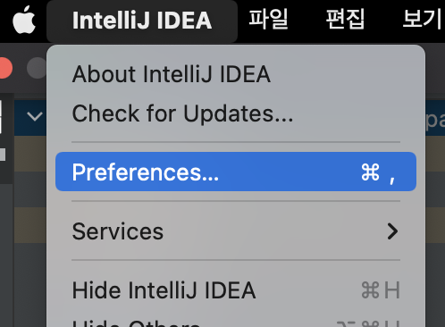
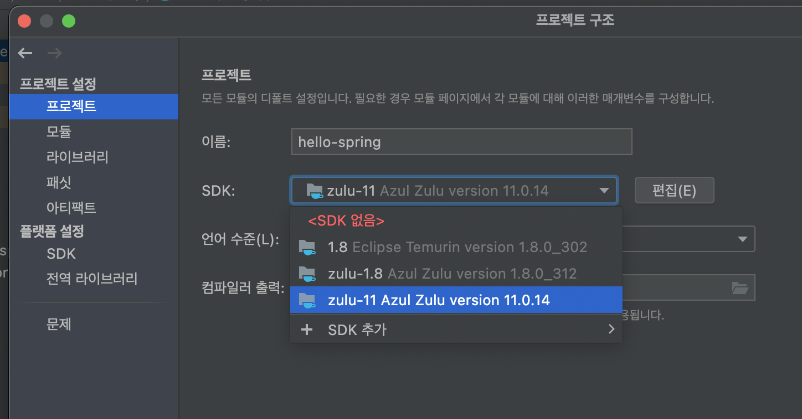

에러해결 Log) 스프링부트 invalid source release 11
사용환경
- MacBook Air (M1, 2020) 16GB
- OpenJDK 11
- IntelliJ IDEA Community
에러의 발생
스프링 입문 - 코드로 배우는 스프링 부트, 웹 MVC, DB 접근 기술
Execution failed for task ':compileJava'.
> invalid source release: 11
- 유우명한 강의 김영한님의 스프링부트 입문 강의를 듣기 시작했는데 프로젝트 빌드부터 되지 않는 것이었다. 와이라노…
- 에러 메시지로 구글링 결과 프로젝트에 세팅된 자바 버전과 나의 로컬 환경에 세팅된 자바 버전이 맞지 않는 것이 문제였다.
- 강의는 자바 11을 기준으로 진행되기 때문에 프로젝트 생성을 11버전 기준으로 했는데 나는 한동안 자바 8을 써서 인텔리제이의 기본 세팅도 다 8로 되어 있었던 것이었다… 그래서 이것들을 11로 바꿔줘야 했다.
문제 해결

- 먼저
Preferences에 들어간다.

- 위 캡쳐본의 메뉴로 들어가서 JRE 버전을 프로젝트에 맞게 바꿔준다. 내 스프링부트 프로젝트 버전은 11이기 때문에 11로 바꿔준다.
- 내 인텔리제이는 한글패치가 되어 있어서 한글로 나오는데 영문버전을 쓰고 있다면
Build, Run, Deployment > Runner뭐 이런 느낌인 곳으로 가면 될 것이다.

Gradle JVM경로도 바꿔준다.

-
그리고 코틀린도 바꿔줌…
-
여기까지 해서 빌드가 잘 되면 좋겠지만 그렇지 않은 경우가 더 많을 것이다. (내가 그랬음…) 보통 IDE 자체의 자바 버전 설정이 옛날거로 되어 있으면 생성되는 프로젝트의 버전 설정도 다 따라가기 때문에 프로젝트의 버전 설정도 바꿔줘야 한다.

- 프로젝트 위에서 마우스 우클릭 후 모듈 설정으로 들어간다.

- 여기서 프로젝트를 선택한 다음 설정되어 있는 SDK 버전을 바꿔준다. 여기까지 하면 정상 빌드 성공!!